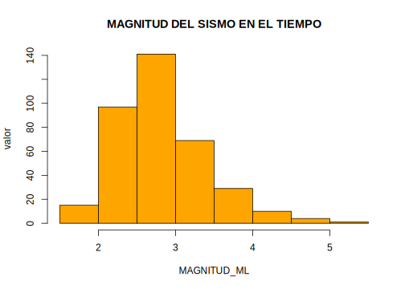
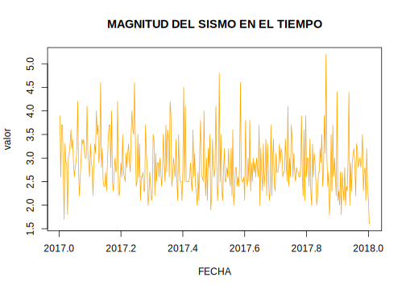
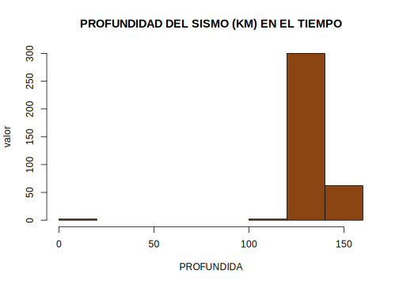
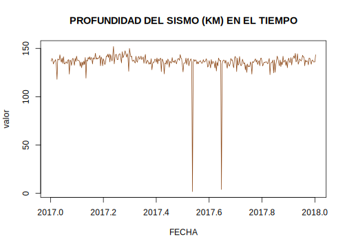

Chapter 4 Variable Serie Tiempo
Análisis de la Data
A continuación se se seleccionan las variables de análisis para el presente ejercicio:
Profundidad: esta variable se selcciono dado que representa la profundidad del foco sísmico y este influye en cómo se siente un terremoto en la superficie, los terremotos superficiales, son aquellos que tienen un foco a menos de 70 km de profundidad, estos generalmente causan mas daño ya que la energía que liberan no se dispera tanto antes de llegar a la superficie.
Magnitud: la magnitud en Colombia se reorta utilizando la escala de Richter, esta medida permite conocer cuanta es la energía liberada por un sismo.
sismo_3 <- sismo_2 # copiamos data2
sismo_3 <- sismo_3 [, c(1,5,6)] # data con 3 variables 1:fecha, 5:profundidad, 6:magnitud
#sismo_3$fecha_hora <- paste(sismo_3$FECHA," ",sismo_3$HORA_UTC)# unir columnas 1 y 2
#sismo_3$fecha_hora <- as.POSIXct(sismo_3$fecha_hora) # convertir a tipo date time
#sismo_3$FECHA_UNIX <- as.POSIXct(sismo_3$FECHA)
sismo_3 <- sismo_3[order(sismo_3$FECHA), ] #ordenamo sismo_3 de menor a mayor
head(sismo_3,2)## # A tibble: 2 × 3
## FECHA PROFUNDIDAD MAGNITUD_ML
## <date> <dbl> <dbl>
## 1 2011-02-28 134. 1.9
## 2 2011-02-28 144. 3.5Se agrupan las fechas para obtener un dato único por día, con relación a la magnitud se decidió calcular el maximo de cada día para conocer el sismo que libera la mayor cantidad de energía y con relación a la profundidad se decidió calcular el minimo con el fin de determianr el sismo que esta mas cerca a la superficie y puede causar mas daño.
sismo_4_max <- sismo_3 %>% # Agrupamos por fecha y obtenemos el máximo de la magnitud para cada fecha
group_by(FECHA) %>%
summarise(MAX_MAGNITUD_ML = max(MAGNITUD_ML),
MIN_PROFUNDIDAD = min(PROFUNDIDAD))
head(sismo_4_max, 2)## # A tibble: 2 × 3
## FECHA MAX_MAGNITUD_ML MIN_PROFUNDIDAD
## <date> <dbl> <dbl>
## 1 2011-02-28 3.5 134.
## 2 2011-03-01 2.9 136.Dado que no hay información para todos los días del año entre el 28 de febrero de 2011 y el 28 de febrero de 2018 primero se creo un data frame con todas las fechas en ese rango y posteriormente los datos faltantes en las variables MAGNITUD Y PROFUNCIDAD se llenaron de la siguiente forma:
Profundidad: la profundidad se decio llenar con la media que es 145.0610908. Esta decición esta fundamentada en que la revisar la gráfica de series de tiempo, si se llenaran con profundidad 0 generaria mucho ruido y no permitiria visualizar adecuadamente los simso que realmente presentan una profundida baja y cercana a la superficie.
Magnitud: la magnitud se decidio llenar con 0.
# Crear un data frame con todas las fechas en el rango deseado
todas_las_fechas <- data.frame(FECHA = seq(as.Date("2011-02-28"), as.Date("2018-02-28"), by = "day"))
sismo_4_max_completo <- todas_las_fechas %>%
left_join(sismo_4_max, by = "FECHA") %>%
mutate(MAX_MAGNITUD_ML = ifelse(is.na(MAX_MAGNITUD_ML), 0, MAX_MAGNITUD_ML),
MIN_PROFUNDIDAD = ifelse(is.na(MIN_PROFUNDIDAD), 145.0610908, MIN_PROFUNDIDAD))
# Filtrar desde el 28 de febrero de 2017 hasta el 28 de febrero de 2018
sismo_4_max_completo_filtrado <- sismo_4_max_completo %>%
filter(FECHA >= as.Date("2017-02-28") & FECHA <= as.Date("2018-02-28"))
head(sismo_4_max_completo_filtrado, 2)## FECHA MAX_MAGNITUD_ML MIN_PROFUNDIDAD
## 1 2017-02-28 3.9 136.8
## 2 2017-03-01 2.6 139.6Se revisa que el número de filas concurde para comprobar que se encuentran todos los días entre el 28 de febrero de 2011 y el 28 de febrero de 2018.
## [1] 2558## [1] 366Serie de tiempo Magnitud
indice.ts <- ts(sismo_4_max_completo_filtrado$MAX_MAGNITUD_ML,start = c(2017,2),end = c(2018,2), frequency = 365)
#head(indice.ts,10)
head(indice.ts)## Time Series:
## Start = c(2017, 2)
## End = c(2017, 7)
## Frequency = 365
## [1] 3.9 2.6 3.7 3.7 2.7 1.7Datos de la serie
## [1] "Tipo ts"## [1] "ts"## [1] "Inicio serie"## [1] 2017 2## [1] "fin serie"## [1] 2018 2Gráfica de la serie
hist(indice.ts,main="",ylab="valor", col='orange', xlab ="MAGNITUD_ML")
title(main="MAGNITUD DEL SISMO EN EL TIEMPO") La distribución de la magnitud de los sismos en el municipio de Los Santos Santander evidencia que la mayoria de los sismos presentados son de magnitud baja y no presnetan un mayor riezgo para la población. Hay presencia de sismos de magnitud fuerte sin embargo hay que revisar la profundidad de estos para determinar si causan daños a la población.
plot(indice.ts,main="",ylab="valor", col='orange', xlab ="FECHA")
title(main="MAGNITUD DEL SISMO EN EL TIEMPO")
Serie de tiempo Profundidad
P_indice.ts <- ts(sismo_4_max_completo_filtrado$MIN_PROFUNDIDAD,start = c(2017,2),end = c(2018,2), frequency = 365)
#head(indice.ts,10)
head(P_indice.ts)## Time Series:
## Start = c(2017, 2)
## End = c(2017, 7)
## Frequency = 365
## [1] 136.8 139.6 138.5 133.9 136.1 136.8Datos de la serie
## [1] "Tipo ts"## [1] "ts"## [1] "Inicio serie"## [1] 2017 2## [1] "fin serie"## [1] 2018 2Gráfica de la serie
hist(P_indice.ts,main="",ylab="valor", col='saddlebrown', xlab ="PROFUNDIDA")
title(main="PROFUNDIDAD DEL SISMO (KM) EN EL TIEMPO") La distribución de la profundiad de los sismos en el municipio de Los Santos Santander evidencia que la mayoria de los sismos presentados son de alta profunidad y no presnetan un mayor riezgo para la población.
plot(P_indice.ts,main="",ylab="valor", col='saddlebrown', xlab ="FECHA")
title(main="PROFUNDIDAD DEL SISMO (KM) EN EL TIEMPO")